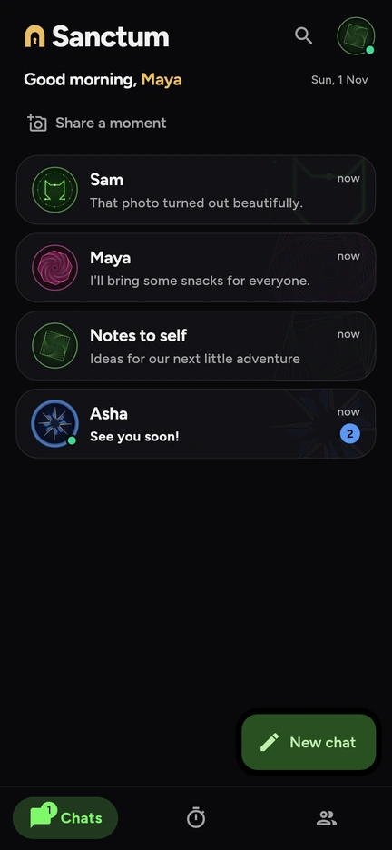
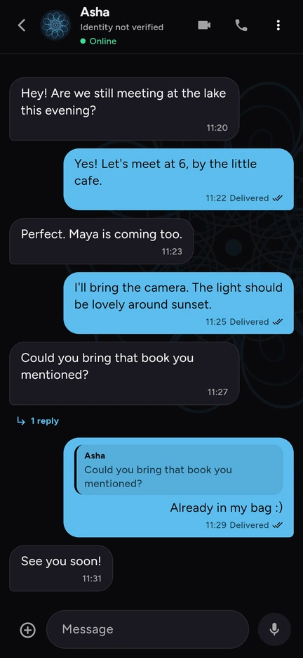
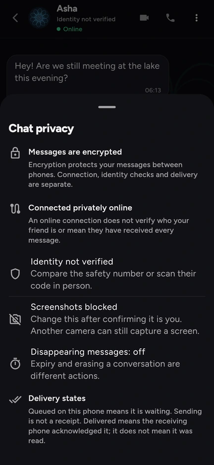

Say your thing.
Messages, photos, files and voice notes. Replies, reactions and threads keep a good conversation going.
One to one, or groups of up to 50Private chat for your close circle.
Messages, calls and plans for the people you trust. Encrypted on your phones, routed through Tor by default.
No account. No phone number. No ads.
Free beta · Android 7 and later · Installation help


The real app, with sample profiles and conversations.
A little room for everything
A conversation, a shared plan, a moment from your day. The little things have a home here.
Messages, photos, files and voice notes. Replies, reactions and threads keep a good conversation going.
One to one, or groups of up to 50Voice and video calls, with end-to-end encryption. Connect through Tor, or choose a faster route together.
Your connection choices stay explicitPick a day with a poll, make a plan, share an album or send a daily moment to your friends.
More doing things. More little memories.Nearby, when you choose. Chat over local Wi-Fi, a hotspot or Bluetooth without internet.
A little less permanent. Temporary chats live in memory; each message expires after 24 hours.
A face for every friendship. Personal sigils make your people and conversations easy to recognise.
Take a closer look
Real screens from Sanctum, with example conversations. Select a screenshot to open the full image.
Personal sigils and clear unread counts keep your people easy to find.
Replies, shared moments and the everyday details that bring you closer.

Connection, identity checks and delivery each tell you something different.
On a smaller screen, swipe through the gallery.
Privacy, with the details
Sanctum has no central message inbox. Your phones hold your conversations and connect to each other.
Look through the sourceEnd-to-end encryption protects content between phones. Check your friend's identity with an in-person QR scan or by comparing the safety number.
Tor is the default online route. Nearby and Faster calls are optional and explain what they share. Strong observers can still correlate traffic; no network makes a compromised phone safe.
Messages are stored encrypted on your phone. There are no cloud backups, ads or analytics. Keep your phone secure: losing it also means losing its chats.
Your circle starts here
Sanctum is a free Android beta. Install the signed app, then invite someone you trust.
Download the latest APK from our GitHub release page. No store account needed.
Open the file and follow Android's installation prompt. Later, check and install updates in Settings → Updates.
Scan their QR code or enter their friend code. Verify their identity together, and start a conversation.
A few things to know
Yes. Sanctum is a free beta with no ads or subscription. Its source is public on GitHub. It is still being improved, so use it with an understanding of the privacy trade-offs.
Sanctum is distributed directly through GitHub Releases. Android asks you to allow installation from the app opening the file. Updates must be signed with the same signing key as your installed app.
New messages wait on the sender's phone until the phones can connect. In groups, members who already received a message can help pass it on.
Nearby is an optional way to connect over local Wi-Fi, a phone's hotspot or Bluetooth. Both people need to be within range. Bluetooth support requires Android 10 or later.
Sanctum is currently available for Android. There is no iPhone version to download.
Expiry removes messages from Sanctum. A recipient can still save or capture content outside the app. Erasing another phone's copy also depends on reaching it.
Scan their QR code in person, or compare the safety number together through a trusted channel. A matching sigil is a useful visual check; it does not guarantee a phone or network is uncompromised.
There are no cloud backups. Your friends retain their copies, but your phone's conversations are lost. Install Sanctum on a new phone and add your friends again.
A project by RTensorLabs
Bring a friend. Start a conversation. Make it yours.